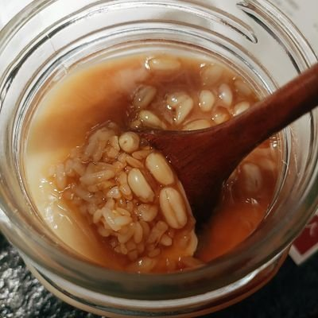

小酸2.0（邪恶魔女化发作版）
@Dodioibs
赵露思我们互换身体吧，你在我的小破出租屋里被我的家人网友关心。我在你的大别墅里接受网友媒体的谩骂和网暴

asdgg122
@asdgg122140107
@MarshWatt776 本来就是装啊，住着大别墅还在那卖惨了，她长相在中国娱乐圈一直被吐槽普通，她能获得那么多资源应该感谢她公司，而且公司给她的利益分割已经很大了，她不懂感恩，还人心不足蛇吞象，现在有人还借着于朦胧事件给她还有什么迪丽热巴陈都灵郭俊辰卖惨，一群资源接到手软的还在卖惨，这是侮辱于朦胧呢？